Basics
Camera Transformations
To map a 3D world point to the image, we use two steps:
- Convert the point from world coordinates to camera coordinates.
- Project the camera-space point to pixel coordinates using the intrinsics.
1. World $\rightarrow$ Camera Coordinates
Let the camera center be $C$ and orientation be $R$.
A world point $X$ is mapped into camera coordinates by
Define the translation
$$ t = -RC, $$so the extrinsic mapping becomes
$$ X_C = RX + t. $$In homogeneous coordinates:
$$ \begin{bmatrix} X_C \\ Y_C \\ Z_C \\ 1 \end{bmatrix}=\begin{bmatrix} R & t \\ 0 & 1 \end{bmatrix} \begin{bmatrix} X \\ Y \\ Z \\ 1 \end{bmatrix}. $$2. Camera $\rightarrow$ Pixel Coordinates
A point in the camera frame projects via
$$ u = \frac{X_C}{Z_C}, \qquad v = \frac{Y_C}{Z_C}. $$To convert into pixels, we apply the intrinsic matrix
$$ K = \begin{bmatrix} f_x & 0 & c_x \\ 0 & f_y & c_y \\ 0 & 0 & 1 \end{bmatrix}. $$This gives
$$ u = \frac{f_x X_C}{Z_C} + c_x, \qquad v = \frac{f_y Y_C}{Z_C} + c_y. $$Combined:
$$ \begin{bmatrix}u \\ v \\ 1\end{bmatrix}= K\,[R\;t] \begin{bmatrix}X \\ Y \\ Z \\ 1\end{bmatrix}, \qquad s = Z_C. $$3. Pixel $\rightarrow$ Camera Ray (Back-Projection)
To go from pixel $(u, v)$ back into camera space, we recover the ray direction.
Step 1: Remove intrinsics
$$ \begin{bmatrix} x \\ y \\ 1 \end{bmatrix}= K^{-1} \begin{bmatrix} u \\ v \\ 1 \end{bmatrix}. $$Explicitly:
$$ x = \frac{u - c_x}{f_x}, \qquad y = \frac{v - c_y}{f_y}. $$This gives the direction in camera coordinates:
$$ d_C = \begin{bmatrix} x \\ y \\ 1 \end{bmatrix}. $$Step 2: Form the 3D ray
All 3D points along that pixel’s ray in camera space are:
$$ X_C(\lambda) = \lambda \, d_C = \lambda \begin{bmatrix} x \\ y \\ 1 \end{bmatrix}, \qquad \lambda>0. $$Here
- $\lambda$ controls the depth,
- $d_C$ is the ray direction in the camera frame,
- the camera center is at the origin in camera coordinates, so there is no position term.
This is the complete back-projection from pixel $\rightarrow$ ray in camera space.
$$ \begin{array}{c|cccccccc|c} \textbf{World point} & & \xrightarrow[\text{rotate + translate}]{\begin{bmatrix} R & t \\ 0 & 1 \end{bmatrix}} & \begin{bmatrix}X_C\\Y_C\\Z_C\\1\end{bmatrix} & \xrightarrow[\text{Drop last component}]{\begin{bmatrix} 1 & 0 & 0 & 0 \\ 0 & 1 & 0 & 0 \\ 0 & 0 & 1 & 0 \end{bmatrix}} & \begin{bmatrix}X_C\\Y_C\\Z_C\end{bmatrix} & \xrightarrow[\text{intrinsics}]{K = \begin{bmatrix} f_x & 0 & c_x \\ 0 & f_y & c_y \\ 0 & 0 & 1 \end{bmatrix}} & \begin{bmatrix}\tilde u\\ \tilde v\\Z_C\end{bmatrix} & \xrightarrow[\text{Normalizing}]{\text{Perspective Divide}} Z_C\begin{bmatrix}u\\v\\1\end{bmatrix} & \textbf{Pixel} \\[20pt] \begin{bmatrix}X\\Y\\Z\\1\end{bmatrix} & & \xleftarrow[\text{(rotate + translate)}^{-1}]{\begin{bmatrix} R & t \\ 0 & 1 \end{bmatrix}^{-1}} & \begin{bmatrix}X_C\\Y_C\\Z_C\\1\end{bmatrix} & \xleftarrow[\text{make homogeneous}]{\text{append 1}} & \begin{bmatrix}X_C\\Y_C\\Z_C\end{bmatrix} & \xleftarrow[\text{If depth known}]{\lambda = Z_C} & \begin{bmatrix}x\lambda\\y\lambda\\\lambda\end{bmatrix} & \xleftarrow[\substack{\text{invert intrinsics} \\[3pt] \text{create 3D ray}}]{\lambda K^{-1}} & \begin{bmatrix}u\\v\\1\end{bmatrix} \end{array} $$
Interactive World 2 Cam
Inverse Transform Sampling
Definition
Let $U \sim \mathrm{Unif}[0,1]$. We want to generate a random variable $X$ with CDF $F_X(x)$.
Assume $F_X$ is continuous and strictly increasing so that it has a well-defined inverse.
We look for a strictly monotone transformation
such that the transformed variable $T(U)$ has the same distribution as $X$:
Compute the CDF of $T(U)$:
$$ F_X(x) = \Pr(X \le x) = \Pr(T(U) \le x) = \Pr(U \le T^{-1}(x)). $$Because $U \sim \mathrm{Unif}[0,1]$,
$$ \Pr(U \le y) = y, \qquad 0 \le y \le 1. $$Thus,
$$ F_X(x) = T^{-1}(x). $$So $F_X$ is the inverse of $T$, which implies
$$ T(u) = F_X^{-1}(u), \qquad u \in [0,1]. $$Therefore, the desired random variable $X$ can be generated by
$$ X = F_X^{-1}(U). $$Interactive Simulation
SfM
MPI
Stereo Magnification
Radiance Fields
NeRF
Overview
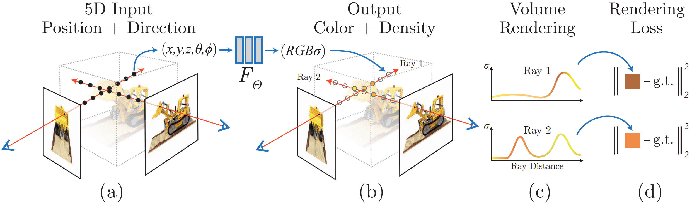
Uses a Neural Network to represent a continuous scene as a $5D$ vector-valued function whose input is a $3D$ location and a $2D$ viewing direction, and whose output is a volume density and emitted color.
$$ f\!\left( \underbrace{x, y, z}_{\text{3D point}},\; \underbrace{\theta, \phi}_{\text{viewing direction}} \right) \;\longrightarrow\; \left( \underbrace{\sigma}_{\text{opacity}},\; \underbrace{\mathbf{c} = (r, g, b)}_{\text{RGB color}} \right) $$- Sample some pixels from the image to train the model
- Render using NeRF along the ray for that pixel; use an MLP to sample along the ray
- Use a loss (e.g., MSE or PSNR) to compare the rendered output and backpropagate to train
Positional Encoding
Despite the fact that neural networks are universal function approximators, having the network $F_\Theta$ directly operate on $xyz\theta\phi$ input coordinates results in renderings that perform poorly at representing high-frequency variation in color and geometry because deep networks are biased towards learning lower frequency functions.
Mapping the inputs to a higher dimensional space using high frequency functions before passing them to the network enables better fitting of data that contains high frequency variation.
$$\gamma : \mathbb{R}\rightarrow \mathbb{R}^{2L}$$$$\gamma(p) = (\sin(2^0\pi p), \cos(2^0\pi p), \dots, \sin(2^{L - 1}\pi p), \cos(2^{L - 1}\pi p))$$This function $\gamma(\cdot)$ is applied separately to each of the three coordinate values in $\mathbf{x}$ which are normalized to lie in $[-1, 1]$ and to the three components of the Cartesian viewing direction unit vector $\mathbf{d}$ (which by construction lie in $[-1, 1]$).
A similar mapping is used in the popular Transformer architecture, where it is referred to as a positional encoding.
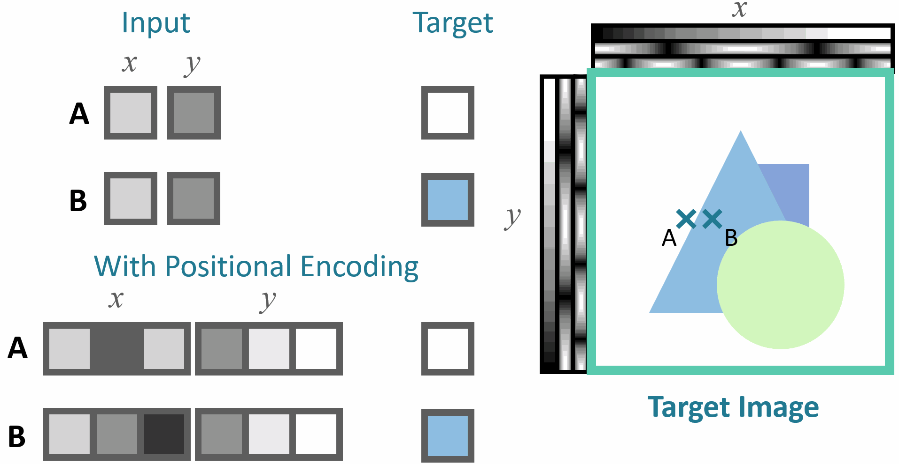
Hierarchical Sampling
To render using the NeRF we need to sample along the ray for the pixel. A ray is defined as:
$$\mathbf{r}(t) = \underbrace{\mathbf{o}}_{\text{origin}} + t\underbrace{\mathbf{d}}_{\text{direction}}$$Divide the scene’s $[z_{\text{near}}, z_{\text{far}}]$ into $n$ intervals of equal length. Uniformly sample at random within each interval:
$$ z_i \sim \mathbb{U} \left[ z_n + \frac{(i - 1)(z_{\text{far}} - z_{\text{near}})}{n}, \; z_n + \frac{i (z_{\text{far}} - z_{\text{near}})}{n} \right] $$Our rendering strategy of densely evaluating the neural radiance field network at $N$ query points along each camera ray is inefficient, free space and occluded regions that do not contribute to the rendered image are still sampled repeatedly.
Instead, simulate two networks: coarse network and fine network.
Sample $N_c$ locations using stratified sampling, and evaluate the coarse network at these locations. Given the output of this network, we then produce a more informed sampling of points along each ray where samples are biased towards the relevant parts of the volume.
To do this, we first rewrite the alpha composited color from the coarse network $\hat{C}_c(\mathbf{r})$ as a weighted sum of all sampled colors $c_i$ along the ray:
$$\hat{C}_c(\mathbf{r}) = \sum_{i=1}^{N_c} w_i c_i, \quad w_i = T_i (1 - \exp(-\sigma_i \delta_i))$$We can normalize these weights as $\hat{w}_i = \frac{w_i}{\sum_j w_j}$ to produce a piecewise-constant PDF along the ray.
We then sample a second set of $N_f$ locations from this distribution using inverse transform sampling, evaluate the network at the union of first and second set of samples, and compute the final rendered color of ray $\hat{C}_f(\mathbf{r})$ using $N_c + N_f$ samples.
Loss Function
During training, the loss is simply the total squared error between the rendered and true pixel colors for both the coarse and fine renderings:
$$\mathcal{L} = \sum_{\mathbf{r}\in \mathcal{R}} \left[ \|\hat{C}_c(\mathbf{r}) - C(\mathbf{r})\|_2^2 + \|\hat{C}_f(\mathbf{r}) - C(\mathbf{r})\|_2^2 \right]$$where $\mathcal{R}$ is the set of rays in each batch, and $C(\mathbf{r})$, $\hat{C}_c(\mathbf{r})$ and $\hat{C}_f(\mathbf{r})$ are the ground truth, coarse volume predicted and fine volume predicted RGB colors for the ray $\mathbf{r}$ respectively.
Note that even though the final rendering comes from $\hat{C}_f(\mathbf{r})$, we also minimize the loss of $\hat{C}_c(\mathbf{r})$ so that the weight distribution from the coarse network can be used to allocate samples in the fine network.
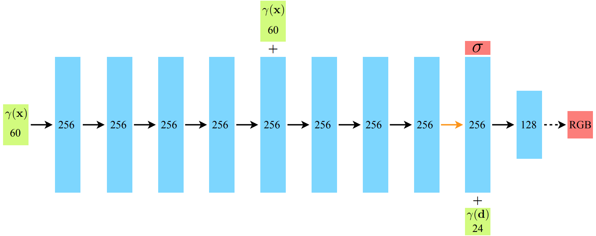
Plenoxels: Radiance Fields without Neural Networks
Overview
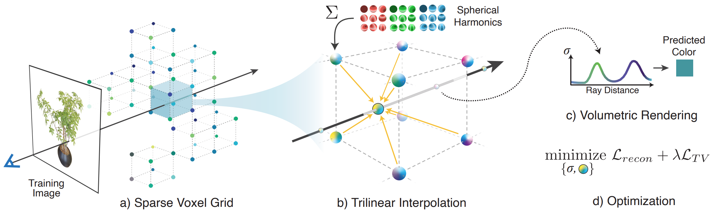
In light of the substantial computational requirements of NeRF for both training and rendering, many recent papers have proposed methods to improve efficiency, particularly for rendering.
Method
Plenoxels (plenoptic voxels) represent a scene as a sparse 3D grid with spherical harmonics. This representation can be optimized from calibrated images via gradient methods and regularization without any neural components.
Spherical Harmonics
Uses spherical harmonic coefficients $\mathbf{k}$, rather than RGB values:
$$(\mathbf{k}, \sigma), \quad \mathbf{k} = (k^m_l)_{l: 0 \leq l \leq l_{max}}^{m: -l \leq m \leq l}$$Each $k_l^m \in \mathbb{R}^{3}$ is a set of 3 coefficients corresponding to RGB components. In this setup, the view-dependent color $\mathbf{c}$ at a point $\mathbf{x}$ may be determined by querying the SH functions $Y_l^m:\mathbb{S}\rightarrow\mathbb{R}$ at desired viewing angle $\mathbf{d}$:
$$c(\mathbf{x}, \mathbf{d}; \mathbf{k}) = \sigma\left( \sum_{l=0}^{l_{max}}\sum_{m=-l}^{l} k_l^m Y_l^m(\mathbf{d}) \right)$$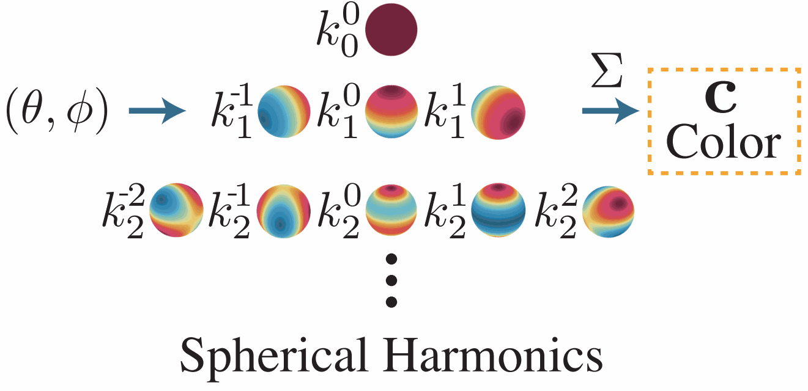
Interpolation
So, each vertex of the grid has the SH coefficients and opacity $\sigma$.
The opacity and color at each sample point along ray are computed by trilinear interpolation of opacity and harmonic coefficients stored at nearest 8 voxels.
Coarse to Fine
Achieves high resolution via coarse-to-fine strategy that begins with a dense grid at lower resolution, optimizes, prunes unnecessary voxels, refines the remaining voxels by subdividing each in half in each dimension, and continues optimizing.
Voxel pruning is performed using the method from PlenOctrees Paper here, which applies a threshold to the maximum weight $T_i(1 - \exp(-\sigma_i \delta_i))$ of each voxel over all training ray (or, alternatively, to the density value in each voxel).
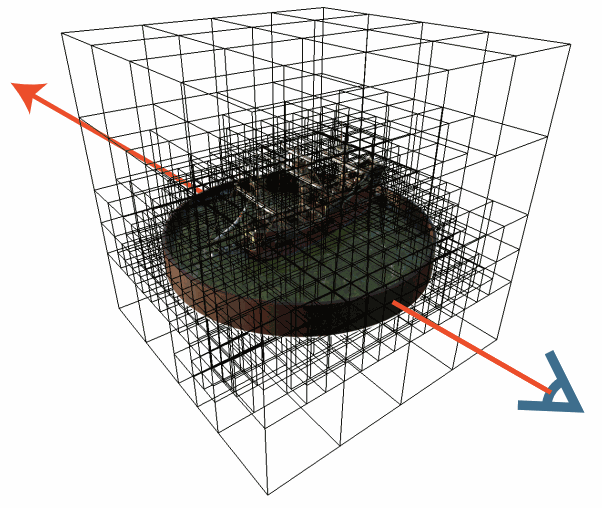
Due to trilinear interpolation, naively pruning can adversely impact the color and density near surfaces since values at these points interpolate with the voxels in the immediate exterior. To solve this, they performed a dilation operation so that voxel is only pruned if both itself and its neighbors are deemed unoccupied.
Optimization
Optimize the voxel opacities and spherical harmonic coefficients with respect to the mean squared error (MSE) over rendered pixel colors with total variation (TV) regularization. Specifically, the loss is:
$$\mathcal{L} = \mathcal{L}_{recon} + \lambda_{TV}\mathcal{L}_{TV}$$where these losses are defined as
$$\mathcal{L}_{\text{recon}}= \frac{1}{|\mathcal{R}|} \sum_{\mathbf{r} \in \mathcal{R}}\left\| C(\mathbf{r}) - \hat{C}(\mathbf{r}) \right\|_2^2 $$$$\mathcal{L}_{\text{TV}} = \frac{1}{|\mathcal{V}|} \sum_{\mathbf{v} \in \mathcal{V}} \sum_{d \in [D]} \sqrt{\Delta_x^2(\mathbf{v}, d)+ \Delta_y^2(\mathbf{v}, d)+ \Delta_z^2(\mathbf{v}, d)}$$where $ \Delta_x^2(\mathbf{v}, d) $ denotes the squared difference between the $ d^\text{th} $ value in voxel $ \mathbf{v} := (i, j, k) $ and the $ d^\text{th} $ value in voxel $ (i + 1, j, k) $, normalized by the resolution. Analogously, $ \Delta_y^2(\mathbf{v}, d) $ and $ \Delta_z^2(\mathbf{v}, d) $ represent the squared differences along the $ y $- and $ z $-axes, respectively.
Plenoxels achieves significantly faster training than NeRF while maintaining comparable rendering quality since they don’t use neural networks just use differentiable rendering framework.
TensoRF
Overview
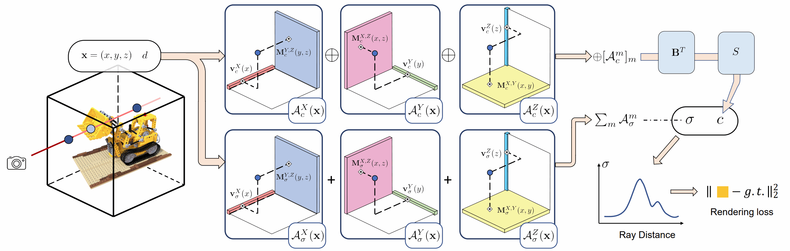
Unlike NeRF that purely uses MLPs, TensoRF models the radiance field of a scene as a 4D tensor, which represents a 3D voxel grid with per-voxel multi-channel features. The central idea is to factorize the 4D scene tensor into multiple compact low-rank tensor components.
TensoRF presents a novel vector-matrix (VM) decomposition technique that effectively reduces the number of components required for the same expression capacity, leading to faster reconstruction and better rendering than the classic CANDECOMP/PARAFAC (CP) decomposition.
CP Decomposition
Given a 3D tensor $\mathcal{T} \in \mathbb{R}^{I \times J \times K}$, CP decomposition factorizes it into a sum of outer products of vectors:
$$ \mathcal{T} = \sum_{r=1}^R \mathbf{v}_r^{1} \circ \mathbf{v}_r^{2} \circ \mathbf{v}_r^{3} $$where $\mathbf{v}_{r}^{1} \circ \mathbf{v}_{r}^{2} \circ \mathbf{v}_r^{3}$ corresponds to a rank-one tensor component, and $\mathbf{v}_r^{1} \in \mathbb{R}^{I}$, $\mathbf{v}_r^{2} \in \mathbb{R}^{J}$, and $\mathbf{v}_r^{3} \in \mathbb{R}^{K}$ are factorized vectors of the three modes for the $r^\text{th}$ component. Superscripts denote the modes of each factor; $\circ$ represents the outer product. Hence, each tensor element $\mathcal{T}_{ijk}$ is a sum of scalar products:
$$ \mathcal{T}_{ijk} = \sum_{r=1}^R \mathbf{v}_{r,i}^{1} \mathbf{v}_{r,j}^{2} \mathbf{v}_{r,k}^{3} $$where $i, j, k$ denote the indices of the three modes.
CP decomposition factorizes a tensor into multiple vectors, expressing multiple compact rank-one components. However, because of too high compactness, CP decomposition can require many components to model complex scenes, leading to high computational costs in radiance field reconstruction.
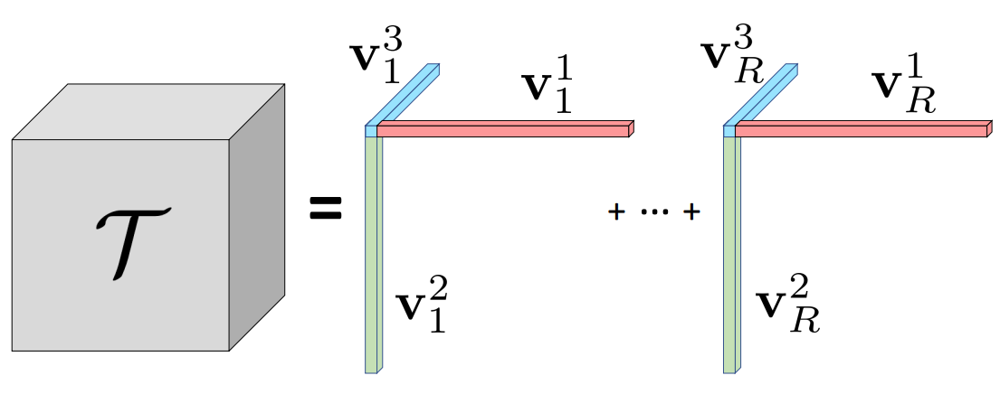
Vector-Matrix (VM) Decomposition
Unlike CP decomposition that utilizes pure vector factors, VM decomposition factorizes a tensor into multiple vectors and matrices. This is expressed by:
$$ \mathcal{T} = \sum_{r=1}^{R_1} \mathbf{v}_r^{1} \circ \mathbf{M}_r^{2,3} + \sum_{r=1}^{R_2} \mathbf{v}_r^{2} \circ \mathbf{M}_r^{1,3} + \sum_{r=1}^{R_3} \mathbf{v}_r^{3} \circ \mathbf{M}_r^{1,2} $$where $\mathbf{M}_r^{2,3} \in \mathbb{R}^{J \times K}$, $\mathbf{M}_r^{1,3} \in \mathbb{R}^{I \times K}$, and $\mathbf{M}_r^{1,2} \in \mathbb{R}^{I \times J}$ are matrix factors for two (denoted by superscripts) of the three modes.
For each component, we relax its two mode ranks to be arbitrarily large, while restricting the third mode to be rank-one; e.g., for component tensor $\mathbf{v}_r^{1} \circ \mathbf{M}_r^{2,3}$, its mode-1 rank is 1, and its mode-2 and mode-3 ranks can be arbitrary, depending on the rank of the matrix $\mathbf{M}_r^{2,3}$.
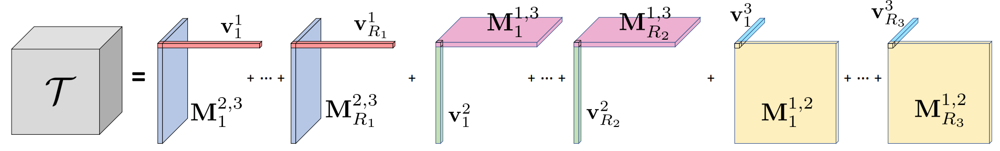
Comparison
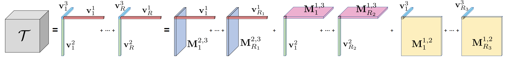
Tensor for Scene Modeling
In this work, we focus on the task of modeling and reconstructing radiance fields. We can view the image below. In this case, the three tensor modes correspond to the XYZ axes, and we thus directly denote the modes with XYZ to make it intuitive. Meanwhile, in the context of 3D scene representation, we consider $R_1 = R_2 = R_3 = R$ for most scenes, reflecting the fact that a scene can distribute and appear equally complex along its three axes. Therefore, the previous equation can be re-written as:
$$ \mathcal{T} = \sum_{r=1}^{R} \mathbf{v}_r^{X} \circ \mathbf{M}_r^{Y,Z} + \mathbf{v}_r^{Y} \circ \mathbf{M}_r^{X,Z} + \mathbf{v}_r^{Z} \circ \mathbf{M}_r^{X,Y} $$In addition, to simplify notation and the following discussion in later sections, we also denote the three types of component tensors as $A_r^{X} = \mathbf{v}_r^{X} \circ \mathbf{M}_r^{Y,Z}$, $A_r^{Y} = \mathbf{v}_r^{Y} \circ \mathbf{M}_r^{X,Z}$, and $A_r^{Z} = \mathbf{v}_r^{Z} \circ \mathbf{M}_r^{X,Y}$; here the superscripts XYZ of $A$ indicate different types of components.
With this, a tensor element $\mathcal{T}_{ijk}$ is expressed as:
$$ \mathcal{T}_{ijk} = \sum_{r=1}^{R} \sum_{m} \mathcal{A}_{r,ijk}^{m} $$where $m \in \{X, Y, Z\}$, $A_{r,ijk}^{X} = v_{r,i}^{X} M_{r,jk}^{Y,Z}$, $A_{r,ijk}^{Y} = v_{r,j}^{Y} M_{r,ik}^{X,Z}$, and $A_{r,ijk}^{Z} = v_{r,k}^{Z} M_{r,ij}^{X,Y}$.
Feature Grids and Radiance Field
We leverage a regular 3D grid G with per-voxel multi-channel features to model such a function. We split it (by feature channels) into a geometry grid $\mathcal{G}_{\sigma}$ and an appearance grid $\mathcal{G}_{c}$, separately modelling the volume density $\sigma$ and view-dependent color $c$:
$$ \sigma, c = \mathcal{G}_{\sigma}(\mathbf{x}), \; \underbrace{\mathcal{S}(\mathcal{G}_{c}(\mathbf{x}), d)}_{\text{it can be MLP/SH}} $$where $\mathcal{G}_{\sigma}(\mathbf{x})$, $\mathcal{G}_{c}(\mathbf{x})$ represent the trilinearly interpolated features from the two grids at location $\mathbf{x}$. We model $\mathcal{G}_{\sigma}$ and $\mathcal{G}_{c}$ as factorized tensors.
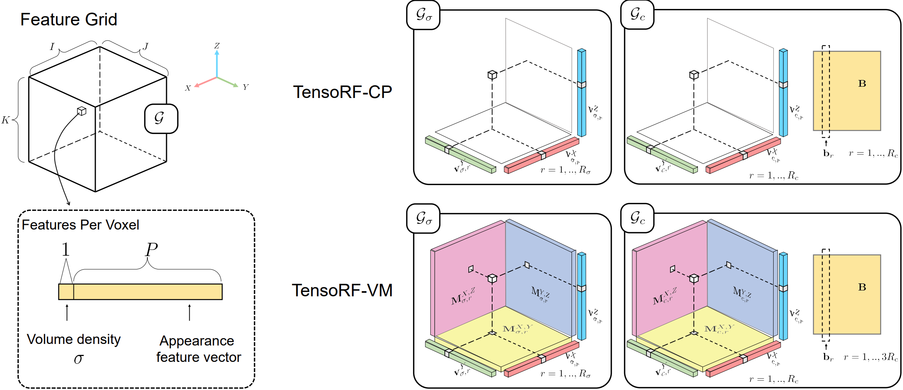
Factorizing Radiance Fields
While $\mathcal{G}_{\sigma} \in \mathbb{R}^{I \times J \times K}$ is a 3D tensor, $\mathcal{G}_{c} \in \mathbb{R}^{I \times J \times K \times P}$ is a 4D tensor. Here $I, J, K$ correspond to the resolutions of the feature grid along the X, Y, Z axes, and $P$ is the number of appearance feature channels.
We factorize these radiance field tensors to compact components. In particular, with the VM decomposition, the 3D geometry tensor $\mathcal{G}_{\sigma}$ is factorized as:
$$ \mathcal{G}_{\sigma} = \sum_{r=1}^{R_{\sigma}} \mathbf{v}_{\sigma,r}^{X} \circ \mathbf{M}_{\sigma,r}^{Y,Z} + \mathbf{v}_{\sigma,r}^{Y} \circ \mathbf{M}_{\sigma,r}^{X,Z} + \mathbf{v}_{\sigma,r}^{Z} \circ \mathbf{M}_{\sigma,r}^{X,Y} = \sum_{r=1}^{R_{\sigma}} \sum_{m \in \{X,Y,Z\}} \mathcal{A}_{\sigma,r}^{m} $$The appearance tensor $\mathcal{G}_{c}$ has an additional mode corresponding to the feature channel dimension:
$$ \mathcal{G}_{c} = \sum_{r=1}^{R_{c}} \mathbf{v}_{c,r}^{X} \circ \mathbf{M}_{c,r}^{Y,Z} \circ \mathbf{b}_{3r-2} + \mathbf{v}_{c,r}^{Y} \circ \mathbf{M}_{c,r}^{X,Z} \circ \mathbf{b}_{3r-1} + \mathbf{v}_{c,r}^{Z} \circ \mathbf{M}_{c,r}^{X,Y} \circ \mathbf{b}_{3r} $$$$ = \sum_{r=1}^{R_{c}} \mathcal{A}_{c,r}^{X} \circ \mathbf{b}_{3r-2} + \mathcal{A}_{c,r}^{Y} \circ \mathbf{b}_{3r-1} + \mathcal{A}_{c,r}^{Z} \circ \mathbf{b}_{3r} $$Note that we have $3R_{c}$ vectors $\mathbf{b}_{r}$ to match the total number of components.
Overall, we factorize the entire tensorial radiance field into $3R_{\sigma} + 3R_{c}$ matrices ($\mathbf{M}_{\sigma,r}^{Y,Z}, \ldots, \mathbf{M}_{c,r}^{Y,Z}, \ldots$) and $3R_{\sigma} + 6R_{c}$ vectors ($\mathbf{v}_{\sigma,r}^{X}, \ldots, \mathbf{v}_{c,r}^{X}, \ldots, \mathbf{b}_{r}$).
In general, we adopt $R_{\sigma} \ll I, J, K$ and $R_{c} \ll I, J, K$, leading to a highly compact representation that can encode a high-resolution dense grid.
In essence, the XYZ-mode vector and matrix factors $\mathbf{v}_{\sigma,r}^{X}, \mathbf{M}_{\sigma,r}^{Y,Z}, \mathbf{v}_{c,r}^{X}, \mathbf{M}_{c,r}^{Y,Z}, \ldots$ describe the spatial distributions of the scene geometry and appearance along their corresponding axes. On the other hand, the appearance feature-mode vectors $\mathbf{b}_{r}$ express the global appearance correlations.
By stacking all $\mathbf{b}_{r}$ as columns together, we have a $P \times 3R_{c}$ matrix $\mathbf{B}$; this matrix $\mathbf{B}$ can also be seen as a global appearance dictionary that abstracts the appearance commonalities across the entire scene.
Interpolation
Naively achieving trilinear interpolation is costly, as it requires evaluation of 8 tensor values and interpolating them, increasing computation by a factor of 8 compared to computing a single tensor element. However, we find that trilinearly interpolating a component tensor is naturally equivalent to interpolating its vector/matrix factors linearly/bilinearly for the corresponding modes, thanks to the beauty of linearity of the trilinear interpolation and the outer product.
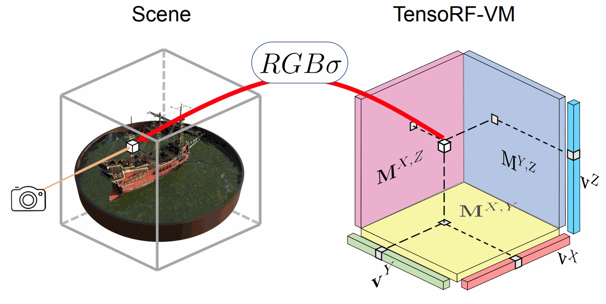
Rendering Process
For a 3D point $\mathbf{x}$ and viewing direction $\mathbf{d}$:
-
Interpolate geometry features:
$$\mathbf{f}_{\sigma} = \text{interp}(\mathcal{G}_{\sigma}, \mathbf{x})$$ -
Compute density:
$$\sigma(\mathbf{x}) = \text{ReLU}(\mathbf{f}_{\sigma})$$ -
Interpolate appearance features:
$$\mathbf{f}_{c} = \text{interp}(\mathcal{G}_{c}, \mathbf{x})$$ -
Predict color with small MLP or SH:
$$\mathbf{c}(\mathbf{x}, \mathbf{d}) = \text{MLP/SH}([\mathbf{f}_{c}, \mathbf{d}])$$
Training Objective
The optimization minimizes a composite loss:
$$ \mathcal{L} = \mathcal{L}_{\text{recon}} + \lambda_{\text{TV}} \mathcal{L}_{\text{TV}} $$where:
- Reconstruction loss: $\mathcal{L}_{\text{recon}} = \|\mathbf{C} - \hat{\mathbf{C}}\|_2^2$ (MSE between rendered and ground truth colors)
- Total Variation (TV) regularization: $\mathcal{L}_{\text{TV}}$ encourages spatial smoothness in the vector and matrix factors:
TV regularization prevents overfitting and removes floaters/artifacts by enforcing piecewise-smooth geometry and appearance.
Instant NGP
Overview
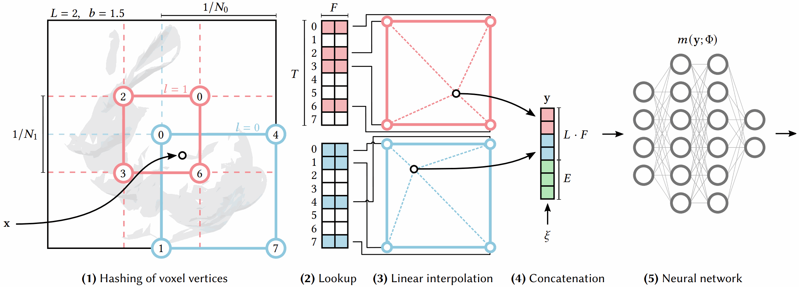
Given a fully connected neural network $m(y; \Phi)$, we are interested in an encoding of its inputs $y = \text{enc}(x; \theta)$ that improves the approximation quality and training speed across a wide range of applications without incurring a notable performance overhead.
Multiresolution Hash Encoding
Our neural network not only has trainable weight parameters $\Phi$, but also trainable encoding parameters $\theta$. These are arranged into $L$ levels, each containing up to $T$ feature vectors with dimensionality $F$.
Each level (two of which are shown as red and blue in the figure) is independent and conceptually stores feature vectors at the vertices of a grid, the resolution of which is chosen to be a geometric progression between the coarsest and finest resolutions $[N_{\min}, N_{\max}]$:
$$ N_l := \left\lfloor N_{\min} \cdot b^{\,l} \right\rfloor, $$$$ b := \exp\!\left( \frac{\ln N_{\max} - \ln N_{\min}}{L - 1} \right). $$$N_{\max}$ is chosen to match the finest detail in the training data. Due to the large number of levels $L$, the growth factor is usually small.
Growth Factor Derivation
To create a geometric progression of resolutions from $N_{\min}$ to $N_{\max}$ over $L$ levels:
$$N_l = N_{\min} \cdot b^l \quad \text{for } l = 0, 1, \ldots, L-1$$At the finest level ($l = L-1$), we want $N_{L-1} = N_{\max}$:
$$N_{\min} \cdot b^{L-1} = N_{\max}$$Solving for $b$:
$$b^{L-1} = \frac{N_{\max}}{N_{\min}}$$Take natural log of both sides:
$$(L-1) \ln(b) = \ln(N_{\max}) - \ln(N_{\min})$$Therefore:
$$b = \exp\left(\frac{\ln N_{\max} - \ln N_{\min}}{L - 1}\right)$$Intuition: We have $L$ levels, requiring $(L-1)$ multiplicative steps. The formula ensures each level’s resolution is exactly $b$ times the previous level, creating a smooth exponential growth from coarse to fine detail.
We map each corner to an entry in the level’s respective feature vector array, which has a fixed size of at most $T$. For coarse levels where a dense grid requires fewer than $T$ parameters, i.e. $(N_l + 1)^d \leq T$, this mapping is $1\!:\!1$.
At finer levels, we use a hash function $h : \mathbb{Z}^d \rightarrow \mathbb{Z}_T$ to index into the array, effectively treating it as a hash table, although there is no explicit collision handling. We rely instead on the gradient-based optimization to store appropriate sparse detail in the array, and the subsequent neural network $m(y; \Phi)$ for collision resolution.
The number of trainable encoding parameters $\theta$ is therefore $\mathcal{O}(T)$ and bounded by $T \cdot L \cdot F$.
The spatial hash function has the form:
$$ h(\mathbf{x}) = \left( \sum_{i=1}^{d} x_i \, \pi_i \right) \bmod T, $$where $\pi_i$ are unique large prime numbers (e.g., $\pi_1 = 1$, $\pi_2 = 2654435761$, $\pi_3 = 805459861$).
Feature Lookup and Interpolation
For a query point $\mathbf{x}$, the encoding process at each resolution level $l$ involves:
- Identify surrounding voxel: Find the 8 corner vertices of the voxel containing $\mathbf{x}$ at resolution $N_l$
- Hash each corner: Apply $h(\mathbf{x}_i)$ to each of the 8 corners to get indices into the hash table
- Retrieve features: Look up the $F$-dimensional feature vectors $\mathbf{f}_i \in \mathbb{R}^F$ from the hash table
- Trilinear interpolation: Interpolate features based on $\mathbf{x}$’s position within the voxel:
- Concatenate across all levels: The final encoded representation is:
This encoded feature vector $y$ is then fed to the MLP $m(y; \Phi)$ for final prediction.
Network Architecture
After hash encoding, a compact MLP processes the concatenated features. For NeRF applications:
- Input: Encoded position features $y \in \mathbb{R}^{L \cdot F}$ concatenated with viewing direction $\mathbf{d}$
- Architecture: 2 hidden layers with 64 neurons each (vs. original NeRF’s 8 layers × 256 neurons)
- Activation: ReLU
- Output: RGB color $\mathbf{c} \in \mathbb{R}^3$ and volume density $\sigma \in \mathbb{R}$
The forward pass is:
$$ \mathbf{c}, \sigma = m\left([\text{enc}(\mathbf{x}; \theta), \mathbf{d}]; \Phi\right) $$The dramatically smaller network (2 layers vs 8) is enabled by the expressive hash encoding, which offloads spatial feature learning from the MLP to the trainable hash table.
Collision Handling
When multiple voxel corners hash to the same index in the hash table (a collision), no explicit resolution mechanism is used. Instead:
- Multi-resolution disambiguation: The same 3D location maps to different indices at different resolution levels, providing redundancy
- Neural disambiguation: The MLP $m(y; \Phi)$ learns to interpret ambiguous/collided features correctly during training
- Gradient-based prioritization: Backpropagation naturally stores important features where gradients are high, while collisions in low-gradient regions have minimal impact
- Sparse detail: The optimization focuses hash table capacity on regions with fine detail, letting collisions occur in smooth/empty areas
This implicit collision handling is what allows a fixed-size hash table ($T \approx 2^{19}$ entries) to represent arbitrarily fine detail without explicit collision resolution overhead.
Hyperparameter Configuration
Typical values for NeRF applications:
- Hash table size: $T = 2^{19}$ (~524K entries)
- Feature dimension: $F = 2$ per level
- Number of levels: $L = 16$
- Resolution range: $N_{\min} = 16$, $N_{\max} = 2048$
- Total encoding parameters: $T \cdot L \cdot F \approx 16.8$ million
Total trainable parameters (encoding + MLP) is still much smaller than original NeRF while achieving 20-60× faster training.
3DGS
Overview
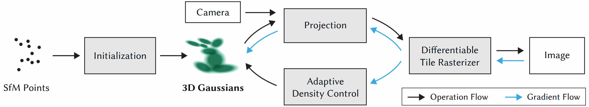
The input to the method is a set of images of a static scene, together with the corresponding cameras calibrated by Structure-from-Motion (SfM), which produces a sparse point cloud as a side-effect.
Gaussian Parametrization
From these sparse points, a set of 3D Gaussians is created, where each Gaussian is parametrized by:
$$\mu \in \mathbb{R}^{3}: \text{center position (mean)}$$$$r \in \mathbb{R}^{4}: \text{rotation (using quaternion representation)}$$$$s \in \mathbb{R}^{3}: \text{scale factors}$$The covariance matrix $\Sigma \in \mathbb{R}^{3\times 3}$ is decomposed as:
$$\Sigma = RSS^TR^T$$where:
- $S \in \mathbb{R}^{3 \times 3}$ is a diagonal scaling matrix: $S = \text{diag}(s_x, s_y, s_z)$
- $R \in SO(3)$ is a rotation matrix constructed from quaternion $r$: $R = \text{q2R}(r)$
This parametrization ensures the covariance $\Sigma$ is positive semi-definite (PSD), which is required for valid Gaussians.
Rendering using Gaussians
3DGS uses spherical harmonics (SH) to encode view-dependent appearance and uses $\alpha$-blending. Point-based $\alpha$-blending and NeRF-style volumetric rendering share essentially the same image formation model. The color $C$ along a ray is given by:
$$ C = \sum_{i=1}^{N} T_i (1 - \exp(-\sigma_i \delta_i)) c_i \quad \text{with} \quad T_i = \exp\left(-\sum_{j=1}^{i-1} \sigma_j \delta_j\right) $$where samples of density $\sigma$, transmittance $T$, and color $\mathbf{c}$ are taken along the ray with intervals $\delta_i$. This can be rewritten as:
$$ C = \sum_{i=1}^{N} T_i \alpha_i \mathbf{c}_i $$with
$$ \alpha_i = (1 - \exp(-\sigma_i \delta_i)) \quad \text{and} \quad T_i = \prod_{j=1}^{i-1} (1 - \alpha_j) $$For each pixel, the color and opacity of $N$ overlapping Gaussians are combined as:
$$ C = \sum_{i=1}^{N}c_i\alpha_i\prod_{j=1}^{i - 1}(1 - \alpha_j) $$The $\alpha_i$ value for each Gaussian is computed as:
$$\alpha_i = o_i \cdot e^{-\frac{1}{2}(\mathbf{x} - \mu_i)^T \Sigma_i^{-1} (\mathbf{x} - \mu_i)}$$where $o_i$ is the learned opacity parameter, ensuring $\alpha_i$ decreases as we move away from the Gaussian center $\mu_i$.
Projection to Screen Space
To render 3D Gaussians, they must be projected to 2D screen space. Given camera extrinsic matrix $T$ and intrinsic matrix $K$:
$$\hat{\mu} = KT[\mu, 1]^T$$$$\hat{\Sigma} = J W \Sigma W^T J^T$$
where:
- $\hat{\mu}$: 2D position on screen
- $\hat{\Sigma}$: 2D covariance in screen space
- $J$: Jacobian of the projection
- $W = T$ (world-to-camera transformation)
This EWA (Elliptical Weighted Average) splatting ensures Gaussians remain elliptical after projection.
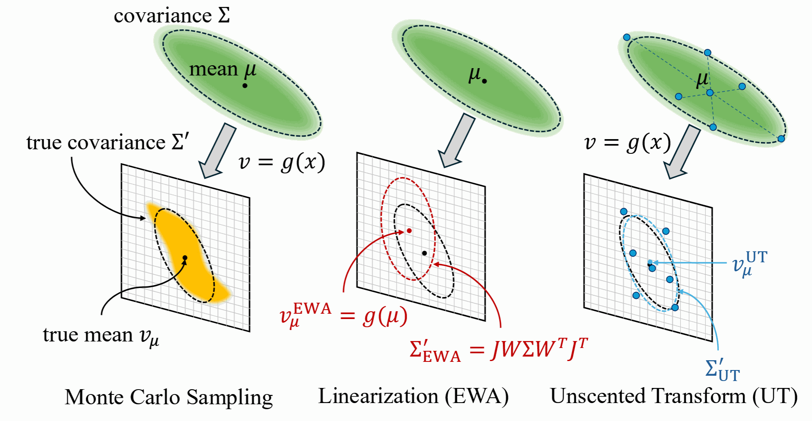
Adaptive Density Control
Starting from the initial sparse SfM point cloud, the method adaptively controls the number of Gaussians and their density through densification and pruning operations.
Two main scenarios require density adjustment:
- Under-reconstruction: Regions with missing geometric features
- Over-reconstruction: Regions where Gaussians cover excessively large areas
Clone (Under-Reconstruction)
For under-reconstructed regions, Gaussians with high positional gradients are cloned: a copy is created and moved in the direction of the positional gradient.
Split (Over-Reconstruction)
For over-reconstructed regions with large Gaussians:
- Replace the original Gaussian with two smaller ones
- Divide each scale component by 1.6 (as specified in the paper)
- Initialize positions by sampling from the PDF of the original Gaussian
Pruning
Gaussians are removed to maintain efficiency:
- Remove Gaussians with opacity $o < \epsilon$ (typically $\epsilon = 0.005$)
- Reset opacity to near-zero every $K$ iterations (typically 3000 iterations) to force re-optimization
- Remove Gaussians that are excessively large in world space
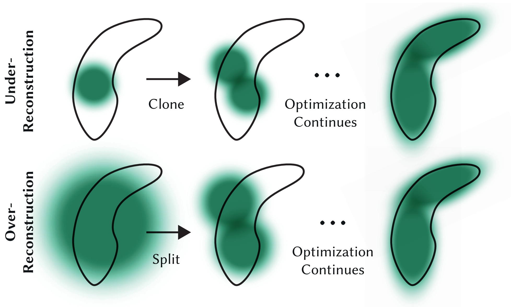
Algorithm 1 Optimization and Densification
$w, h$: width and height of the training images
| $M \leftarrow$ SfM Points | ▷ Positions |
| $S, C, A \leftarrow$ InitAttributes() | ▷ Covariances, Colors, Opacities |
| $i \leftarrow 0$ | ▷ Iteration Count |
| while not converged do | |
| $V, \hat{I} \leftarrow$ SampleTrainingView() | ▷ Camera $V$ and Image |
| $I \leftarrow$ Rasterize$(M, S, C, A, V)$ | ▷ Alg. 2 |
| $L \leftarrow$ Loss$(I, \hat{I})$ | ▷ Loss |
| $M, S, C, A \leftarrow$ Adam$(\nabla L)$ | ▷ Backprop & Step |
| if IsRefinementIteration$(i)$ then | |
| for all Gaussians $(\mu, \Sigma, c, \alpha)$ in $(M, S, C, A)$ do | |
| if $\alpha < \epsilon$ or IsTooLarge$(\mu, \Sigma)$ then | ▷ Pruning |
| RemoveGaussian() | |
| end if | |
| if $\nabla_p L > \tau_p$ then | ▷ Densification |
| if $\|S\| > \tau_S$ then | ▷ Over-reconstruction |
| SplitGaussian$(\mu, \Sigma, c, \alpha)$ | |
| else | ▷ Under-reconstruction |
| CloneGaussian$(\mu, \Sigma, c, \alpha)$ | |
| end if | |
| end if | |
| end for | |
| end if | |
| $i \leftarrow i + 1$ | |
| end while |
Training Loss
The optimization uses a combination of L1 and SSIM losses:
$$\mathcal{L} = (1 - \lambda)\mathcal{L}_1 + \lambda \mathcal{L}_{\text{D-SSIM}}$$where $\lambda = 0.2$. This balances:
- L1 loss: Pixel-wise color difference
- D-SSIM: Structural similarity (captures perceptual quality)
Sparse Input
Depth-supervised NeRF
A commonly observed failure mode of Neural Radiance Field (NeRF) is fitting incorrect geometries when given an insufficient number of input views. One potential reason is that standard volumetric rendering does not enforce the constraint that most of a scene’s geometry consist of empty space and opaque surfaces.
Overview
Key idea Leverage the fact that current NeRF pipelines require images with known camera poses that are typically estimated by running structure-from-motion (SFM), which also produces sparse 3D points that can be used as “free” depth super- vision during training:
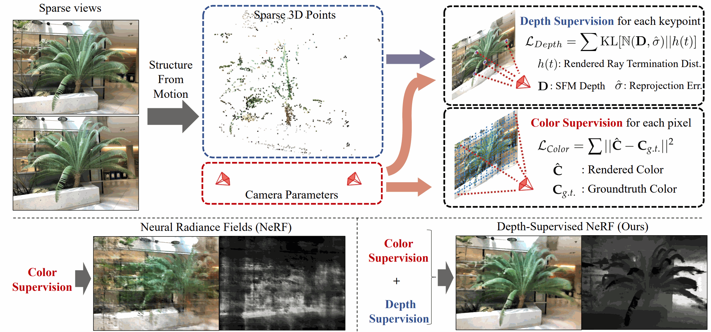
Volumetric Rendering Revisited
To render a 2D image given a pose P, we cast rays r originating from the P’s center of projection o in direction d derived from its intrinsics. We integrate the implicit radiance field along this ray to compute the incoming radiance from any object that lies along d:
$$ C = \int_{0}^{\infty} T(t)\,\sigma(t)\,c(t)\,dt. $$here t parameterizes the aforementioned ray as r(t) = o + td and T (t) = exp(− R t 0 σ(s)ds) checks for occlusions by integrating the differential density between 0 to t
Ray Distribution
$h(t) = T(t)\sigma{(t)}$ is a continuous probability distribution over ray distance $t$ that describes the likelihood of a ray terminating at $t$. Due to practical constraints, NeRFs assume scene lies between a near and far bound $(t_n, t_f)$. To Ensure $h(t)$. To ensure $h(t)$ sums to one, NeRF implementation often treat $t_f$ as opaque wall. With this definition, the rendered color can be written as an expectation:
$$ C = \int_{0}^{\infty} h(t)\,c(t)\,dt = \mathbb{E}_{h(t)}[\,c(t)\,]. $$Idealized distribution
The distribution $h(t)$ describes the weighted contribution of sampled radiances along a ray to the final rendered value. Most scene consist of empty spaces and opaque surfaces that restrict the weighted contribution to stem from the closest surface. This implies that the ideal ray distribution of image point with a closes-surface depth of $D$ should be $\delta (t - D)$. This insight motivates the depth-supervised ray termination loss.
Deriving Depth Supervision
Most NeRF pipelines require images together with their camera matrices $(P_1, P_2, \dots)$, typically estimated using an SfM system such as COLMAP. SfM uses bundle adjustment, which also outputs:
- a set of reconstructed 3D keypoints $\mathcal{X} = \{ X_i \in \mathbb{R}^3 \}$,
- and visibility sets $\mathcal{X}_j \subset \mathcal{X}$, where $\mathcal{X}_j$ contains the keypoints visible in camera $j$.
Given an image $I_j$ and its camera matrix $P_j$, the depth of a visible keypoint $X_i \in \mathcal{X}_j$ is computed by projecting $X_i$ through $P_j$ and taking the reprojected $z$-value as the keypoint’s depth: $D_{ij}.$
Depth Uncertainty
These depth estimates $D_{ij}$ are noisy due to imperfect matches, inaccurate camera parameters, or suboptimal COLMAP optimization. The reliability of a keypoint $X_i$ can be measured using its average reprojection error $\hat{\sigma}_i$ across all views in which it appears.
Model the true depth along the ray as a Gaussian random variable:
$$ D_{ij} \sim \mathcal{N}(D_{ij},\, \hat{\sigma}_i^2). $$A perfect depth measurement would correspond to a delta distribution $\delta(t - D_{ij})$. To align NeRF’s termination distribution $h_{ij}(t)$ with the noisy supervision, we minimize the KL divergence:
$$ \mathbb{E}_{D_{ij}} \left[ \mathrm{KL}\big( \delta(t - D_{ij}) \,\|\, h_{ij}(t) \big) \right]= \mathrm{KL}\big( \mathcal{N}(D_{ij},\, \hat{\sigma}_i^{\,2}) \,\|\, h_{ij}(t) \big)+ \text{const}. $$Ray Distribution Loss
This leads to the following probabilistic depth-supervision loss:
$$ \mathcal{L}_{\text{Depth}} = \mathbb{E}_{X_i \in \mathcal{X}_j} \left[-\int\log h(t)\;\exp\!\left(-\frac{(t - D_{ij})^2}{2 \hat{\sigma}_i^{\,2}}\right)dt\right]. $$Discretizing along ray samples $t_k$ gives:
$$ \mathcal{L}_{\text{Depth}} \approx \mathbb{E}_{X_i \in \mathcal{X}_j} \left[- \sum_k \log h_k\; \exp\!\left(-\frac{(t_k - D_{ij})^2}{2 \hat{\sigma}_i^{\,2}} \right) \Delta t_k \right]. $$The full NeRF loss combines color reconstruction with depth supervision:
$$ \mathcal{L}= \mathcal{L}_{\text{Color}}+ \lambda_D \, \mathcal{L}_{\text{Depth}}. $$VIP NeRF
MiDAS
FSGS
CoR-GS: Sparse-View 3D Gaussian Splatting via Co-Regularization
Overview
Two 3D Gaussian radiance fields trained from the same sparse set of views can exhibit different behaviors. By training two fields simultaneously and measuring their disagreement throughout training, one can analyze the consistency of the learned geometry and appearance. Because ground-truth supervision is applied only on training views, rendering disagreement is evaluated on unseen views.
A notable pattern is that disagreement increases significantly during densification, a phase in which new Gaussians are created but placed without strong geometric constraints. This randomness can introduce geometric errors in sparse-view 3DGS.
Key Point: Both point disagreement (differences in Gaussian positions) and rendering disagreement (differences in rendered appearance or depth) are typically negatively correlated with reconstruction accuracy.
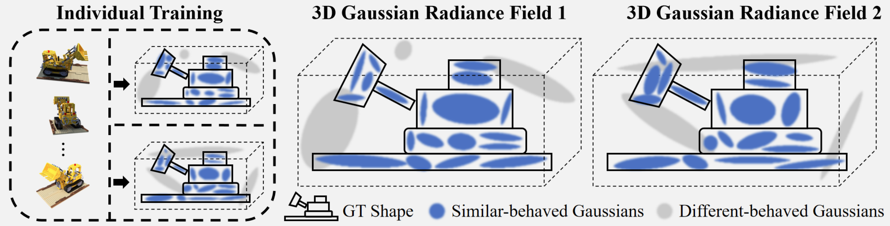
Point Disagreement
When treating the 3D positions of Gaussians in two radiance fields as point clouds, their geometric differences can be quantified using Fitness and RMSE, metrics commonly used in point-cloud registration.
- Fitness: measures the fraction of points that successfully form correspondences within a maximum distance threshold $\tau = 5$. Higher Fitness indicates better overlap.
- RMSE: computes the root mean square of distances between corresponding points, reflecting the average positional discrepancy.
Rendering Disagreement
Differences between radiance fields can also be evaluated in image space.
- PSNR is used to measure disagreement between rendered RGB images.
- Relative Absolute Error (absErrorRel) is used for depth-map comparison and is widely adopted for assessing depth estimation accuracy.
Reconstruction Quality Evaluation
Reconstruction fidelity is typically measured by comparing rendered test-view images against ground-truth images using PSNR.
For a more comprehensive assessment, ground-truth Gaussian positions and depth maps can be obtained by training a 3D Gaussian radiance field using dense multi-view data. Evaluation then includes:
- Fitness and RMSE for geometric accuracy.
- absErrorRel for depth accuracy.
Method
CoR-GS identifies and suppresses inaccurate reconstructions using point disagreement and rendering disagreement. Two 3D Gaussian radiance fields are trained in parallel:
$$ \Theta_1 = \{\theta^1_i\}, \qquad \Theta_2 = \{\theta^2_i\}. $$
Only one field is kept for inference; the other is used to detect disagreement.
The following describes the process for $\Theta_1$ (the procedure for $\Theta_2$ is identical).
Co-pruning
Densification may create Gaussians that are poorly aligned with scene geometry, especially under sparse-view supervision.
Co-pruning removes Gaussians whose positions disagree across the two fields.
Nearest-neighbor correspondence
$$ f(\theta^1_i) = \mathrm{KNN}(\theta^1_i, \Theta_2). $$Non-matching mask A Gaussian is flagged if its nearest counterpart differs by more than $\tau = 5$:
$$ M_i = \begin{cases} 1, & \sqrt{ (\theta^1_{xi} - f(\theta^1_i)_x)^2 + (\theta^1_{yi} - f(\theta^1_i)_y)^2 + (\theta^1_{zi} - f(\theta^1_i)_z)^2 } > \tau,\\[4pt] 0, & \text{otherwise}. \end{cases} $$Pruning
All Gaussians with $M_i = 1$ are removed.
Co-pruning is performed every few (e.g., 5) optimization/density-control interleaves.
Pseudo-view Co-regularization
Sampling pseudo-views
Pseudo-views are sampled using nearby training cameras:
$$ P' = (t + \epsilon,\, q), $$
where $t$ is a training camera position, $\epsilon \sim \mathcal{N}(0,\sigma^2)$,
and $q$ is an averaged quaternion from the two nearest cameras.
Color co-regularization
Render $I'^1$ and $I'^2$ from $\Theta_1$ and $\Theta_2$ at the pseudo-view, and enforce consistency:
$$ \mathcal{R}_{pcolor}= (1-\lambda)\,\mathcal{L}_1(I'^1, I'^2)+ \lambda\,\mathcal{L}_{\mathrm{D\text{-}SSIM}}(I'^1, I'^2). $$Ground-truth supervision
At training views:
$$ \mathcal{L}_{color}= (1-\lambda)\,\mathcal{L}_1(I^1, I^*)+ \lambda\,\mathcal{L}_{\mathrm{D\text{-}SSIM}}(I^1, I^*). $$Final loss
$$ \mathcal{L}= \mathcal{L}_{color}+ \lambda_p \mathcal{R}_{pcolor}, \qquad \lambda_p = 1.0. $$Dust3R
Instant Splat
Dynamic Scenes
Optical Flow
Overview
Given a video, optical flow is defined as a $2D$ vector field describing the apparent movement of each pixel due to relative motion between the camera (observer) and the scene (objects, surfaces, edges). The camera or the scene or both may be moving
Computing Optical Flow
References
- https://web.stanford.edu/class/cs231a/course_notes/09-optical-flow.pdf
- https://www.cs.cmu.edu/~16385/s15/lectures/Lecture21.pdf
We define a video as an ordered sequence of frames captured over time. $I(x, y, t)$, a function of both space and time, represents the intensity of pixel $(x, y)$ in the frame at time t. In dense optical flow, at every time t and for every pixel $(x, y)$, we want to compute the apparent velocity of the pixel in both the $x$-axis and $y$-axis, given by
$$ u(x, y, t) = \frac{\Delta x}{\Delta t}$$$$ v(x, y, t) = \frac{\Delta y}{\Delta t}$$
The optical flow vector for each pixel is then given as $\mathbf{u} = [u, v]^{\top}$ .
Brightness constancy assumption
From the brightness constancy assumption, we can assume that the apparent intensity in the image plane for the same object does not change across different frames. We can define this as for a pixel that moved $\Delta x$ and $\Delta y$ in the $x$ and $y$ directions between times $t$ to $t + \Delta t$.
$$I(x, y, t) = I(x + \Delta x, y + \Delta y, t + \Delta t) $$One common simplification is to use $\Delta t = 1$ (consecutive frames), such that the velocities are equivalent to the displacements $u = \Delta x$ and $v = \Delta y$ so can then obtain $I(x, y, t) = I(x + u, y + u, t + 1)$.
Small motion assumption
We assume the motion $(\Delta t, \Delta y)$ is small from frame to frame. This allows us to linearize $I$ with a first-order Taylor series expansion as:
$$ \begin{aligned} I(x+\Delta x,\, y+\Delta y,\, t+\Delta t) &= I(x,y,t)+ \frac{\partial I}{\partial x}\,\Delta x+ \frac{\partial I}{\partial y}\,\Delta y+ \frac{\partial I}{\partial t}\,\Delta t+ \ldots \\[6pt] &\approx I(x,y,t)+ \frac{\partial I}{\partial x}\,\Delta x+ \frac{\partial I}{\partial y}\,\Delta y+ \frac{\partial I}{\partial t}\,\Delta t. \end{aligned} $$The $\dots$ represents the higher-order terms in the Taylor series expansion which we subsequently truncate out in the next line. Substituting the result into the brightness constancy assumption, we arrive at the optical flow constraint equation:
$$ \begin{aligned} 0 &= \frac{\partial I}{\partial x}\,\Delta x + \frac{\partial I}{\partial y}\,\Delta y+ \frac{\partial I}{\partial t}\,\Delta t \\[6pt] &= \frac{\partial I}{\partial x}\,\frac{\Delta x}{\Delta t}+ \frac{\partial I}{\partial y}\,\frac{\Delta y}{\Delta t}+ \frac{\partial I}{\partial t} \\[6pt] &= I_x\,u + I_y\,v + I_t \end{aligned} $$Here, $I_x$, $I_y$, and $I_t$ denote spatial and temporal derivatives, and $u = \frac{\Delta x}{\Delta t}$, $v = \frac{\Delta y}{\Delta t}$ are the optical flow components.
$$ -I_t = I_x u + I_y v = \nabla I^\top \mathbf{u} = \nabla I \cdot \vec{\mathbf{u}}, $$where $\nabla I = (I_x, I_y)$ and $\mathbf{u} = (u, v)$.
We recognize this as a linear system in the form of $A x = b$.
The spatial image gradient is
and the unknown optical flow vector is
$$ \mathbf{u} = \begin{bmatrix} u \\[4pt] v \end{bmatrix} \in \mathbb{R}^{2\times 1}. $$However, since $\nabla I$ is a fat matrix in the equation
$$ I_x u + I_y v = -I_t, $$the system is under-constrained: one equation with two unknowns. Thus, the brightness constancy constraint reduces the degrees of freedom from two to one, leaving infinitely many $(u, v)$ pairs that satisfy the equation.
Lucas–Kanade (“constant” flow)
Contraint: Flow over a small patch should be the same
Assume that the surrounding patch (e.g., a $5\times5$ window) has constant flow.
Then each pixel $p_i$ in the patch contributes one optical flow constraint:
This gives 25 equations for the two unknowns $u$ and $v$.
In matrix form:
$$ \begin{bmatrix} I_x(p_1) & I_y(p_1) \\ I_x(p_2) & I_y(p_2) \\ \vdots & \vdots \\ I_x(p_{25}) & I_y(p_{25}) \end{bmatrix} \begin{bmatrix} u \\ v \end{bmatrix}=- \begin{bmatrix} I_t(p_1) \\ I_t(p_2) \\ \vdots \\ I_t(p_{25}) \end{bmatrix}. $$Or compactly:
$$ A\,\mathbf{u} = \mathbf{b}, $$where
- $A\in\mathbb{R}^{25\times 2}$ contains spatial gradients $(I_x, I_y)$,
- $\mathbf{u}\in\mathbb{R}^{2\times 1}$ is the optical flow vector,
- $\mathbf{b}\in\mathbb{R}^{25\times 1}$ contains the temporal derivatives $-I_t$.
This overdetermined system is solved in the least-squares sense:
$$ \mathbf{u} = (A^\top A)^{-1} A^\top \mathbf{b}. $$The normal equations for Lucas–Kanade come from the matrix
$$ A^TA = \begin{bmatrix} \displaystyle \sum_{p \in P} I_x^2 & \displaystyle \sum_{p \in P} I_x I_y \\[10pt] \displaystyle \sum_{p \in P} I_y I_x & \displaystyle \sum_{p \in P} I_y^2 \end{bmatrix}. $$Harris Corner Detector!
The Harris matrix (also called the second-moment or structure tensor) which is exactly the same matrix that appears in the Lucas–Kanade optical flow formulation.
Implications
- Corners are when $\lambda_1$, $\lambda_2$ are big; this is also when Lucas-Kanade optical flow works best
- Corners are regions with two different directions of gradient (at least)
- Corners are good places to compute flow
Problem
What happens if the image patch contains only a line? We recover the $v$ of the optical flow but not the $u$. This is the aperture problem. Want patches with different gradients to the avoid aperture problem
Horn-Schunck (“smooth” flow)
Contraint: Flow of neighboring pixels should be smooth
The optical flow has the following objective funcitons
Brightness Constance Assumption
$$ E_d(i, j)=\left( I_x\,u_{ij} + I_y\,v_{ij} + I_t \right)^2 $$Smooth Motion Assumption
$$ E_s(i, j) = \frac{1}{4} \left[ (u_{ij} - u_{i+1,j})^2 + (u_{ij} - u_{i,j+1})^2 + (v_{ij} - v_{i+1,j})^2 + (v_{ij} - v_{i,j+1})^2 \right] $$In Horn-Schunck optical flow we do the following:
$$\min_{u, v}\sum_{ij}\left[ E_d(i, j) + \lambda E_s(i, j) \right]$$We can compute partial derivative, derive update equations (gradient decent)
NSFF
RAFT
RAFT DERF
4DGS
Feedforward and BARF
Pixel Splat
Overview
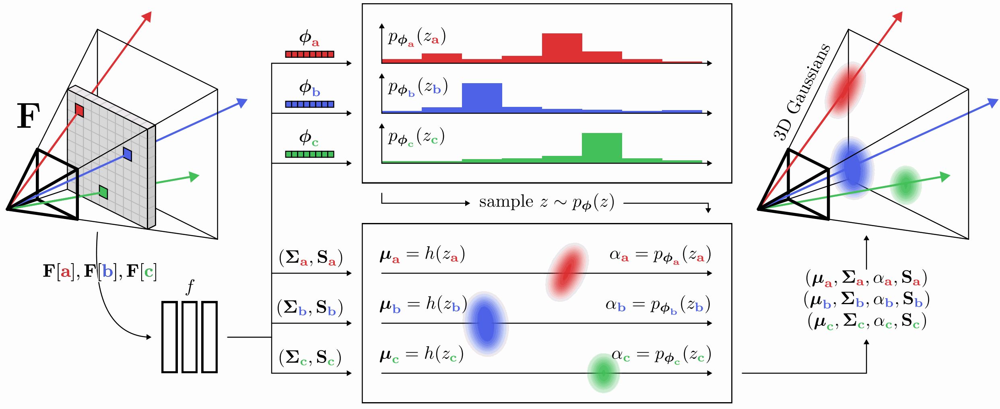
For every pixel feature $F[u]$ in the input feature map, a neural network $f$ predicts Gaussian primitive parameters $\Sigma$ and $S$. Gaussian locations $\mu$ and opacities $\alpha$ are not predicted directly, since this would lead to local minima.
Instead, $f$ predicts per-pixel discrete probability distributions over depths $p_{\phi}(z)$ parameterized by $\phi$. Sampling from this distribution yields the locations of the Gaussian primitives The opacity of each Gaussian is set to the probability of the sampled depth bucket. The final set of Gaussian primitives can then be rendered from novel views using the splatting algorithm. For brevity, we use $h$ to represent the function that computes depths from bucket indices.